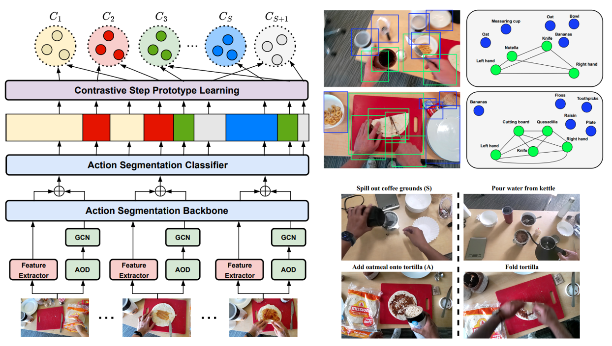
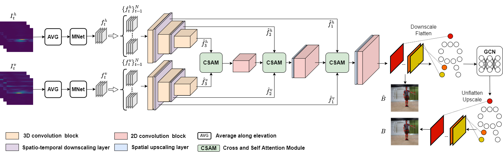

Hello! My name is Shih-Po (Robert) Lee. I am a second-year PhD student at Khoury College of Computer Sciences of Northeastern University.
My research directions are Video Understanding with Computer Vision and Deep Learning. I am currently working on error detection in procedural tasks,
which aims to detect erroneous/abnormal action/steps in the process of performing actions to complete tasks.


News

6/17/2024 - attend CVPR2024 in Seattle and present paper "Error Detection in Egocentric Procedural Task Videos".
2/26/2024 - our paper has been accepted by CVPR2024.
Research Projects


Error Detection in Egocentric Procedural Task Videos
IEEE/CVF Computer Vision and Pattern Recognition Conference (CVPR), June 2024

HuPR: A Benchmark for Human Pose Estimation Using Millimeter Wave Radar
IEEE/CVF Winter Conference on Applications of Computer Vision (WACV), Jan 2023

GSVNet: Guided Spatially-Varying Convolution for Fast Semantic Segmentation on Video
IEEE International Conference on Multimedia and Expo (ICME), July 2021.

Weakly-Supervised Image Semantic Segmentation Using Graph Convolutional Networks
IEEE International Conference on Multimedia and Expo (ICME), July 2021.
Experience

 |
Intern in Electrical & Computer Engineering at University of Washington, Seattle, USA
[September 2021 - March 2022]
|
 |
Research Assistant of UW-NCTU AI Lab supported by University of Washington and National Chiao Tung University, Hsinchu, Taiwan
[August 2020 - August 2022]
|
|
Teaching Assistant for MediaTek in-house AI training program, Hsinchu, Taiwan
[August 2019 - January 2020]
|
Education

 |
PhD student in Khoury College of Computer Sciences, Northeastern University, Boston, USA
[September 2022 - present]
|
|
Master of Science in Institute of Computer Science and Engineering, National Chiao Tung University (NCTU), Taiwan
[September 2018 - August 2020]
|
 |
Bachelor of Science in Computer Science and Engineering, National Sun Yat-sen University (NSYSU), Taiwan
[September 2014 - July 2018]
|
Publications
- S.-P. Lee, Z. Lu, Z. Zhang, M. Hoai, and E. Elhamifar, "Error Detection in Egocentric Procedural Task Videos" IEEE/CVF Computer Vision and Pattern Recognition Conference (CVPR), June 2024.
- S.-P. Lee, N. P. Kini, W.-H. Peng, C.-W. Ma, and J.-N. Hwang, "HuPR: A Benchmark for Human Pose Estimation Using Millimeter Wave Radar" IEEE/CVF Winter Conference on Applications of Computer Vision (WACV), Jan 2023.
- S.-P. Lee, S. C. Chen, and W. H. Peng, "GSVNet: Guided Spatially-Varying Convolution for Fast Semantic Segmentation on Video" IEEE International Conference on Multimedia and Expo (ICME), July 2021.
- S. Y. Pan, C. Y. Lu, S.-P. Lee, and W. H. Peng, "Weakly-Supervised Image Semantic Segmentation Using Graph Convolutional Networks" IEEE International Conference on Multimedia and Expo (ICME), July 2021.